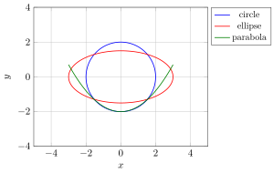
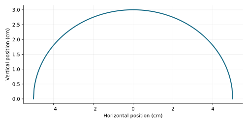

Conic Sections and Parametric Equations
Opening context: geometry in science and motion
Circular calibration targets, elliptical cross sections, parabolic trajectories, and moving sensors all connect algebra with geometry. Conic sections give concise equations for important curves; parametric equations add a description of how a point moves along a curve. This chapter builds on coordinate geometry (Chapter 3), functions (Chapter 4), quadratic equations (Chapter 2), and trigonometry (Chapters 8–11).
Learning outcomes
By the end of this chapter, students will be able to (1) derive and graph standard conic equations; (2) complete the square to find geometric features; (3) distinguish nondegenerate conics from special or degenerate cases; (4) locate vertices, foci, directrices, and asymptotes; (5) construct and interpret parametric curves with parameter restrictions; (6) connect parameterization with motion; (7) use R and Python to visualize conics; and (8) assess assumptions and units in applied models.
Working with R and Python
Each computational laboratory begins with a prediction, then presents a full-width R code listing followed by a full-width Python code listing. Run them separately, compare results with exact mathematics, and interpret plots in context.
Coordinate geometry and the conic family
A conic section is a curve obtained by intersecting a plane with a double cone. Algebraically, the familiar axis-aligned conics arise from second-degree equations. The general quadratic equation \(Ax^2+Bxy+Cy^2+Dx+Ey+F=0\) can represent a conic, a degenerate conic, or no real points. This chapter focuses first on axis-aligned forms, then introduces the role of the \(xy\) term. A graph is a set of ordered pairs; an equation alone must be interpreted together with its real solutions.
Example. The equation \(x^2+y^2=9\) describes all points at distance 3 from the origin, whereas \(x^2+y^2=-9\) has no real solutions.
Guided practice 1. Explain why \(x^2+y^2=0\) represents a single point, not a circle of positive radius.
Circles: distance and completing the square
From the distance formula, points \((x,y)\) a distance \(r>0\) from \((h,k)\) satisfy \(\sqrt{(x-h)^2+(y-k)^2}=r\). Squaring gives \(\boxed{(x-h)^2+(y-k)^2=r^2}\). The center is \((h,k)\) and radius \(r\). Completing the square converts expanded equations to standard form.
Worked example. Rewrite \(x^2+y^2-6x+4y-12=0\). Group terms: \((x^2-6x)+(y^2+4y)=12\). Add 9 and 4 to both sides to obtain \((x-3)^2+(y+2)^2=25\). Center \((3,-2)\), radius 5. Check that \((8,-2)\) lies on the circle.
Guided practice 2. Convert \(x^2+y^2+8x-2y+8=0\) to standard form; identify center, radius, and intercepts.
Visual investigation 1.
Sketch the relevant curve by hand before computing coordinates. Mark its center or vertex, the direction of its axes, and two diagnostic points. Explain what the graph communicates that a list of numerical values does not. Compare a geometric prediction with a computer-generated graph.
Reflection. Identify one feature that changes under translation and one that remains unchanged.
Parabolas as loci and quadratic graphs
A parabola consists of points equidistant from a fixed point (focus) and a fixed line (directrix). For vertical axis, \(\boxed{(x-h)^2=4p(y-k)}\) has vertex \((h,k)\), focus \((h,k+p)\), directrix \(y=k-p\). The parameter \(p\) is signed: positive opens upward, negative downward. Equivalently \(y=k+(x-h)^2/(4p)\). Horizontal-axis form is \((y-k)^2=4p(x-h)\).
Derivation. For vertex at the origin, focus \((0,p)\) and directrix \(y=-p\), equate \(\sqrt{x^2+(y-p)^2}=|y+p|\). Squaring and canceling \(y^2+p^2\) gives \(x^2=4py\).
Worked example. For \((x-2)^2=-8(y+1)\), \(4p=-8\), so \(p=-2\). Vertex \((2,-1)\), focus \((2,-3)\), directrix \(y=1\).
Guided practice 3. Find the focus and directrix of \(y=(x+1)^2/12+4\). Explain the meaning of the sign of \(p\).
Visual investigation 2.
Sketch the relevant curve by hand before computing coordinates. Mark its center or vertex, the direction of its axes, and two diagnostic points. Explain what the graph communicates that a list of numerical values does not. Compare a geometric prediction with a computer-generated graph.
Reflection. Identify one feature that changes under translation and one that remains unchanged.
Ellipses: constant sum of distances
An ellipse is the set of points whose sum of distances to two foci is constant and greater than the distance between the foci. For a horizontal major axis, \(\boxed{\frac{(x-h)^2}{a^2}+\frac{(y-k)^2}{b^2}=1}\) with \(a>b>0\). Vertices \((h\pm a,k)\), co-vertices \((h,k\pm b)\), and foci \((h\pm c,k)\) where \(c^2=a^2-b^2\). For a vertical major axis, interchange the denominators. The eccentricity \(e=c/a\) satisfies \(0<e<1\) for a noncircular ellipse; a circle is the limiting case \(e=0\).
Worked example. \(\frac{(x-1)^2}{25}+\frac{(y+2)^2}{9}=1\) has center \((1,-2)\), \(a=5\), \(b=3\), \(c=4\), vertices \((-4,-2)\) and \((6,-2)\), foci \((-3,-2)\) and \((5,-2)\).
Guided practice 4. Analyze \(\frac{(x+2)^2}{4}+\frac{(y-1)^2}{16}=1\) and sketch its major and minor axes.
Visual investigation 3.
Sketch the relevant curve by hand before computing coordinates. Mark its center or vertex, the direction of its axes, and two diagnostic points. Explain what the graph communicates that a list of numerical values does not. Compare a geometric prediction with a computer-generated graph.
Reflection. Identify one feature that changes under translation and one that remains unchanged.
Hyperbolas: constant difference of distances
A hyperbola consists of points whose absolute difference of distances to two foci is a positive constant smaller than the focal separation. A horizontal hyperbola satisfies \(\boxed{\frac{(x-h)^2}{a^2}-\frac{(y-k)^2}{b^2}=1}\). Vertices \((h\pm a,k)\), foci \((h\pm c,k)\), \(c^2=a^2+b^2\), and asymptotes \(y-k=\pm(b/a)(x-h)\). For a vertical hyperbola the positive term is the \(y\) term and asymptote slopes are \(\pm a/b\). Eccentricity \(e=c/a>1\).
Worked example. \(\frac{(x+1)^2}{9}-\frac{(y-2)^2}{16}=1\) has center \((-1,2)\), vertices \((-4,2),(2,2)\), and asymptotes \(y-2=\pm\frac43(x+1)\). Its foci are \((-6,2)\) and \((4,2)\).
Guided practice 5. Find the center, vertices, foci, and asymptotes of \(\frac{(y+3)^2}{4}-\frac{(x-2)^2}{9}=1\).
Visual investigation 4.
Sketch the relevant curve by hand before computing coordinates. Mark its center or vertex, the direction of its axes, and two diagnostic points. Explain what the graph communicates that a list of numerical values does not. Compare a geometric prediction with a computer-generated graph.
Reflection. Identify one feature that changes under translation and one that remains unchanged.
Recognizing conics and avoiding classification errors
When there is no \(xy\) term, compare the squared coefficients: equal positive coefficients suggest a circle; same-sign unequal nonzero coefficients suggest an ellipse; opposite signs suggest a hyperbola; exactly one squared variable suggests a parabola. This classification requires care: constants may produce a point, intersecting lines, a single line, or no real graph. For \(Ax^2+Bxy+Cy^2+\cdots=0\), the discriminant \(B^2-4AC\) distinguishes the basic nondegenerate types: negative for ellipse type, zero for parabola type, and positive for hyperbola type. It does not alone guarantee a nondegenerate real curve.
Worked example. \(9x^2+4y^2=36\) is an ellipse; \(9x^2-4y^2=36\) is a hyperbola; \(x^2=12y\) is a parabola.
Guided practice 6. Classify \(x^2-y^2=0\), \(x^2+y^2+4=0\), and \(x^2+4y^2=0\) and explain why these are special cases.
Completing the square in two variables
To convert an expanded conic, group \(x\) and \(y\) terms, factor out unequal squared coefficients, complete squares inside parentheses, and divide to normalize. Keep every added constant balanced on both sides.
Worked example. \(4x^2+9y^2-16x+18y-11=0\) becomes \(4(x^2-4x)+9(y^2+2y)=11\), hence \(4(x-2)^2+9(y+1)^2=36\). Thus \(\frac{(x-2)^2}{9}+\frac{(y+1)^2}{4}=1\). Center \((2,-1)\), horizontal major axis, \(a=3\), \(b=2\), \(c=\sqrt5\).
Guided practice 7. Put \(9x^2-4y^2-18x-16y-43=0\) in standard form, checking each constant.
Parametric equations and orientation
A parametric curve is described by \(x=f(t)\) and \(y=g(t)\) over a specified parameter interval. The same geometric curve can have different parametrizations and different directions of travel. Eliminating \(t\) often gives a Cartesian equation but can lose restrictions or orientation. For a circle centered at \((h,k)\), \(x=h+r\cos t\), \(y=k+r\sin t\) for \(0\le t<2\pi\) traces it once counterclockwise.
Worked example. \(x=2t+1\), \(y=t^2\) gives \(t=(x-1)/2\), so \(y=(x-1)^2/4\). If \(-1\le t\le2\), then \(-1\le x\le5\); the graph is only that part of the parabola.
Guided practice 8. Eliminate \(t\) from \(x=3\cos t\), \(y=2\sin t\), \(0\le t\le\pi\); describe which half of the ellipse is traced.
Visual investigation 5.
Sketch the relevant curve by hand before computing coordinates. Mark its center or vertex, the direction of its axes, and two diagnostic points. Explain what the graph communicates that a list of numerical values does not. Compare a geometric prediction with a computer-generated graph.
Reflection. Identify one feature that changes under translation and one that remains unchanged.
Parametric lines, motion, and velocity
A moving point can be modeled by \(x(t)=x_0+v_xt\), \(y(t)=y_0+v_yt\). The vector \((v_x,v_y)\) gives constant velocity in coordinate units per unit time. A nonlinear path may have varying direction and speed. In calculus, velocity is \(\bigl(x'(t),y'(t)\bigr)\), and when \(x'(t)\ne0\), the tangent slope is \(dy/dx=y'(t)/x'(t)\). These are previews rather than prerequisites.
Worked example. A simulated tracking point has \(x(t)=1+3t\), \(y(t)=5-2t\). At \(t=4\), its position is \((13,-3)\) and speed is \(\sqrt{3^2+(-2)^2}=\sqrt{13}\) distance units per time unit.
Guided practice 9. For \(x(t)=2t\), \(y(t)=t^2-1\), tabulate positions at \(t=-2,-1,0,1,2\) and indicate direction.
Parametric ellipses and circular motion
The equations \(x=h+a\cos t\), \(y=k+b\sin t\) trace an ellipse, with \(a,b>0\). Substitution into standard form confirms the identity \(\cos^2t+\sin^2t=1\). Replacing \(t\) by \(\omega t+\phi\) changes angular frequency and starting phase. When \(a=b\), the path is circular. If \(a\ne b\), the coordinate parameter \(t\) is not the polar angle from the center in general.
Worked example. \(x(t)=4+5\cos(2t)\), \(y(t)=-1+2\sin(2t)\) traces an ellipse centered at \((4,-1)\) with semiaxes 5 and 2, completing a cycle in \(\pi\) time units.
Guided practice 10. Find the period and initial position of \(x=3\cos(\pi t)\), \(y=3\sin(\pi t)\).
Visual investigation 6.
Sketch the relevant curve by hand before computing coordinates. Mark its center or vertex, the direction of its axes, and two diagnostic points. Explain what the graph communicates that a list of numerical values does not. Compare a geometric prediction with a computer-generated graph.
Reflection. Identify one feature that changes under translation and one that remains unchanged.
Projectile-style paths as mathematical models
A simple idealized two-dimensional model with constant horizontal velocity and vertical acceleration is \(x(t)=x_0+v_xt\), \(y(t)=y_0+v_yt-\tfrac12gt^2\), with \(g>0\). Eliminating \(t\) when \(v_x\ne0\) produces a downward-opening parabola. The model neglects air resistance and should not be applied to clinical or engineering decisions without validation.
Worked example. For \(x(t)=4t\), \(y(t)=2+6t-5t^2\), substitute \(t=x/4\) to obtain \(y=2+\frac32x-\frac5{16}x^2\). Restrict to physically relevant \(t\ge0\) and before reaching the chosen ground level.
Guided practice 11. Find the maximum height and the time at which it occurs by completing the square in \(y(t)\).
Intersection problems and algebraic verification
Intersections of conics can be found by substitution or elimination. Algebraic solutions must be checked in the original equations, especially after squaring. A tangent intersection may yield a repeated algebraic root. Numerical graphs can suggest solutions but cannot certify exact values.
Worked example. Intersect the circle \(x^2+y^2=25\) with the line \(y=3\). Then \(x^2=16\), giving \((-4,3)\) and \((4,3)\). Each satisfies both original equations.
Guided practice 12. Find the intersection of \(y=x^2\) and \(y=2x+3\) and interpret the solutions geometrically.
Applied modeling: elliptical cross sections
Suppose an idealized imaging cross section is approximated by \(x^2/16+y^2/9=1\) with lengths in centimeters. The full width is 8 cm and full height is 6 cm. Its enclosed area is \(\pi ab=12\pi\,\mathrm{cm}^2\). This is a geometric approximation to a cross section, not a diagnostic measurement. Units must be squared when reporting area.
Worked example. If a uniform scaling factor \(s=1.1\) is applied to both axes, the area becomes \(s^2(12\pi)=14.52\pi\,\mathrm{cm}^2\). A 10% increase in linear dimensions gives a 21% increase in area.
Guided practice 13. Compute the area if the horizontal semiaxis increases by 10% but the vertical semiaxis is unchanged.
Model selection, residuals, and measurement uncertainty
Choosing a conic from measured coordinates is a modeling decision. Scatterplots, units, symmetry, and scientific context matter. A fitted curve may be descriptive without being mechanistic. Residuals are observed minus predicted values; for parametric curves, vertical residuals may be inappropriate when multiple \(y\) values correspond to one \(x\). Measurement error can alter fitted centers and axes.
Worked example. If an observed ellipse has estimated semiaxes \(a=4.0\pm0.1\) and \(b=3.0\pm0.1\) cm, compare the areas \(\pi ab\) at \((a,b)=(3.9,2.9)\) and \((4.1,3.1)\) to illustrate uncertainty bounds.
Guided practice 14. Explain why a circle fitted to elongated observations may systematically underfit near the major-axis ends.
Connections to calculus and future mathematics
Conics recur as level curves in multivariable calculus, while parametric curves allow position, velocity, tangent vectors, and arc length to be described using a single parameter. For \(x=a\cos t\) and \(y=b\sin t\), derivatives give \(x'=-a\sin t\) and \(y'=b\cos t\), so the tangent slope is \(-(b/a)\cot t\) where \(\sin t\ne0\). At \(t=0\), the tangent is vertical, illustrating why the quotient \(y'/x'\) requires care.
Guided practice 15. Use nearby parameter values to estimate the tangent direction at \(t=\pi/2\) for the ellipse \(x=4\cos t\), \(y=2\sin t\).
Visual gallery: comparing the conics

These curves are drawn together for comparison, not as one fitted model. A hyperbola has disconnected branches and is explored in Laboratory A.
Computational laboratory A: graphing and classifying conics
Prediction. Which plotted curves are bounded? Which have asymptotes? Explain before executing the code.
R code
t <- seq(0, 2*pi, length.out=400)
par(mfrow=c(1,2))
plot(3*cos(t), 2*sin(t), type="l", asp=1, xlab="x", ylab="y", main="Ellipse")
u <- seq(-1.4,1.4,length.out=300)
plot(c(2*cosh(u),-2*cosh(u)), c(3*sinh(u),3*sinh(u)), type="n", asp=1, xlab="x", ylab="y", main="Hyperbola")
lines(2*cosh(u),3*sinh(u),col="blue"); lines(-2*cosh(u),3*sinh(u),col="red")
abline(a=0,b=1.5,lty=2);abline(a=0,b=-1.5,lty=2)
par(mfrow=c(1,1))Python code
import numpy as np
import matplotlib.pyplot as plt
t=np.linspace(0,2*np.pi,400);u=np.linspace(-1.4,1.4,300)
fig,ax=plt.subplots(1,2,figsize=(10,4))
ax[0].plot(3*np.cos(t),2*np.sin(t));ax[0].set_title("Ellipse")
ax[1].plot(2*np.cosh(u),3*np.sinh(u));ax[1].plot(-2*np.cosh(u),3*np.sinh(u))
x=np.linspace(-5,5,200);ax[1].plot(x,1.5*x,"--");ax[1].plot(x,-1.5*x,"--")
ax[1].set_title("Hyperbola")
for a in ax:a.set_aspect("equal",adjustable="box");a.grid(True);a.set_xlabel("x");a.set_ylabel("y")
fig.tight_layout();fig.savefig("labA_python.png",dpi=180);plt.close(fig)Interpretation. Verify ellipse intercepts and hyperbola asymptote slopes by hand. Explain why equal axis scales are essential.
Computational laboratory B: parametric curves and orientation
Prediction. Predict the starting point and direction for \(x=3\cos t\), \(y=2\sin t\) when \(0\le t\le2\pi\).
R code
t <- seq(0,2*pi,length.out=400)
x <- 3*cos(t); y <- 2*sin(t)
plot(x,y,type="l",asp=1,xlab="x",ylab="y",main="Parameterized ellipse")
points(x[1],y[1],pch=19,col="red")
idx <- c(1,101,201,301)
arrows(x[idx],y[idx],x[idx+4],y[idx+4],length=0.12,col="blue")
cat("Start:",x[1],y[1],"\n")Python code
import numpy as np
import matplotlib.pyplot as plt
t=np.linspace(0,2*np.pi,400);x=3*np.cos(t);y=2*np.sin(t)
fig,ax=plt.subplots();ax.plot(x,y);ax.scatter([x[0]],[y[0]],label="start")
for k in [0,100,200,300]:ax.annotate("",xy=(x[k+5],y[k+5]),xytext=(x[k],y[k]),arrowprops={"arrowstyle":"->"})
ax.set_aspect("equal");ax.grid(True);ax.legend();ax.set_xlabel("x");ax.set_ylabel("y")
fig.savefig("labB_python.png",dpi=180);plt.close(fig)Interpretation. Compare the full curve with \(0\le t\le\pi\). Describe the effect of reversing the parameter.
Computational laboratory C: fitting an ellipse and examining residuals
Prediction. Noisy observations near an ellipse should not lie exactly on the model. What should a residual plot reveal?
R code
set.seed(13)
t <- seq(0,2*pi,length.out=80)
a <- 4; b <- 2
r <- 1+rnorm(length(t),0,0.04)
x <- a*r*cos(t); y <- b*r*sin(t)
radial_residual <- sqrt((x/a)^2+(y/b)^2)-1
par(mfrow=c(1,2))
plot(x,y,asp=1,pch=19,cex=0.5,main="Simulated measurements")
lines(a*cos(seq(0,2*pi,length.out=300)),b*sin(seq(0,2*pi,length.out=300)),col="blue")
plot(t,radial_residual,pch=19,cex=0.5,main="Normalized radial residuals")
abline(h=0,lty=2);par(mfrow=c(1,1))
print(summary(radial_residual))Python code
import numpy as np
import matplotlib.pyplot as plt
rng=np.random.default_rng(13);t=np.linspace(0,2*np.pi,80);a,b=4,2
r=1+rng.normal(0,0.04,len(t));x=a*r*np.cos(t);y=b*r*np.sin(t)
residual=np.sqrt((x/a)**2+(y/b)**2)-1
fig,ax=plt.subplots(1,2,figsize=(10,4));ax[0].scatter(x,y,s=12)
u=np.linspace(0,2*np.pi,300);ax[0].plot(a*np.cos(u),b*np.sin(u));ax[0].set_aspect("equal")
ax[1].scatter(t,residual,s=12);ax[1].axhline(0,linestyle="--")
ax[0].set_title("Simulated observations");ax[1].set_title("Normalized radial residuals")
fig.tight_layout();fig.savefig("labC_python.png",dpi=180);plt.close(fig)
print("Mean residual:",np.mean(residual),"SD:",np.std(residual))Interpretation. The data are simulated. Compare radial residuals and explain why they are not the same as vertical residuals.
Extended guided workshops with worked solutions
Workshop 1: geometric imaging approximation
A simulated cross section is modeled by \((x-1)^2/25+(y+2)^2/9=1\), with coordinates in centimeters. Find the center, vertices, foci, and enclosed area.
Solution. Center \((1,-2)\); \(a=5\), \(b=3\), \(c=\sqrt{25-9}=4\). Vertices \((-4,-2),(6,-2)\), foci \((-3,-2),(5,-2)\), area \(15\pi\,\mathrm{cm}^2\). The model is geometric only; clinical interpretation requires validated measurements.
Workshop 2: parabolic reflector geometry
A simplified reflector cross section has vertex at the origin and focus at \((0,2)\) centimeters. Derive its equation and determine the width at height \(y=8\).
Solution. Here \(p=2\), so \(x^2=8y\). At \(y=8\), \(x=\pm8\), hence the width is 16 cm. Verify that each endpoint is 10 cm from the focus and 10 cm from the directrix \(y=-2\).
Workshop 3: a hyperbolic location model
The curve \(x^2/9-y^2/16=1\) describes an idealized difference-of-distances locus. Identify vertices, foci, and asymptotes.
Solution. \(a=3\), \(b=4\), \(c=5\). Vertices \((\pm3,0)\), foci \((\pm5,0)\), asymptotes \(y=\pm4x/3\). The difference of distances to the foci is \(2a=6\) on either branch.
Workshop 4: moving sensor on an ellipse
A simulated point moves as \(x(t)=4\cos(\pi t)\), \(y(t)=2\sin(\pi t)\), where \(t\) is in seconds. Determine its Cartesian path, period, initial position, and location at \(t=1/2\).
Solution. \(x^2/16+y^2/4=1\). Period \(2\) seconds; initial position \((4,0)\); at \(t=1/2\), position \((0,2)\). The parameterization is counterclockwise.
Workshop 5: intersection and model choice
A circle \(x^2+y^2=25\) intersects a parabola \(y=x^2-5\). Find all intersection points.
Solution. Substitute \(y=x^2-5\): \(x^2+(x^2-5)^2=25\). Let \(u=x^2\) to obtain \(u^2-9u=0\), so \(u=0\) or \(9\). Thus \((0,-5)\) and \((\pm3,4)\). Verify all three in both equations.
Problem-solving clinic: a systematic method
Identify whether the equation describes a locus, a function, or a parameterized path.
Normalize units and complete squares carefully.
Locate defining features before graphing.
Check algebraic solutions in the original equation.
State parameter or domain restrictions.
Use software to test and visualize, not to replace proof.
Interpret the model only within its scientific assumptions.
Guided practice studio: building a conic from geometric information
Activity A: translating a circle
Start with the unit circle \(x^2+y^2=1\). Translate every point three units right and two units down. Write the new equation and explain why the new coordinates must appear as \(x-3\) and \(y+2\). Next scale the radius by four, keeping the center fixed. Give four points on the resulting circle and check each algebraically.
Solution and reasoning. A translated point has coordinates \((x+3,y-2)\) when \((x,y)\) is on the original circle, so the new locus is \((X-3)^2+(Y+2)^2=1\). Increasing the radius gives \((X-3)^2+(Y+2)^2=16\). The four axis points are \((7,-2)\), \((-1,-2)\), \((3,2)\), and \((3,-6)\). Substituting any of them gives 16. The center changes under translation but not under scaling of the radius.
Activity B: choosing an ellipse from dimensions
A diagram shows an ellipse centered at \((2,-1)\) with full horizontal axis length 12 and full vertical axis length 8. Construct its equation, vertices, foci, and area. Explain why using 12 and 8 directly in the denominators would be incorrect.
Solution and reasoning. The semiaxes are \(a=6\) and \(b=4\), so \((x-2)^2/36+(y+1)^2/16=1\). The vertices are \((-4,-1)\) and \((8,-1)\); \(c=\sqrt{36-16}=2\sqrt5\), giving foci \((2\pm2\sqrt5,-1)\). Area is \(24\pi\) square units. The denominators are squares of semiaxis lengths, not squares of full widths.
Activity C: identifying a parabola from focus and directrix
A point is equidistant from focus \((3,4)\) and the horizontal line \(y=0\). Find the parabola’s vertex, parameter \(p\), and equation. Check the point \((7,6)\) and decide whether it lies on the curve.
Solution and reasoning. The vertex lies halfway between focus and directrix: \((3,2)\). Thus \(p=2\) and \((x-3)^2=8(y-2)\). At \((7,6)\) the left side is 16 while the right side is 32, so it does not lie on the parabola. The focus-directrix definition is a useful independent check.
Activity D: comparing two parameterizations
Compare \(x=2\cos t\), \(y=2\sin t\) and \(x=2\cos(2t)\), \(y=2\sin(2t)\) on \(0\le t\le2\pi\). Do they trace the same geometric set? Do they travel in the same way?
Solution and reasoning. Both trace \(x^2+y^2=4\). The first completes one counterclockwise revolution and the second completes two. Eliminating the parameter gives the same Cartesian equation but loses information about how often the curve is traversed.
Visual reasoning workshop: sketch before plotting
Investigation 7: the role of asymptotes. Draw \(x^2/4-y^2/9=1\) by first sketching the rectangle with corners \((\pm2,\pm3)\). Its diagonals extend along \(y=\pm3x/2\). Mark the vertices \((\pm2,0)\) and sketch the two branches approaching the diagonals. Check a point with \(x=4\) using the equation. Explain why the hyperbola does not cross its asymptotes.
Investigation 8: parameter intervals. Plot the five points generated by \(x=3\cos t\), \(y=2\sin t\) at \(t=0,\pi/2,\pi,3\pi/2,2\pi\). Connect them smoothly, then repeat for \(0\le t\le\pi\). Label arrows and distinguish a full ellipse from its upper half.
Investigation 9: model uncertainty. Sketch ellipses with semiaxes \((4,3)\), \((4.1,3.1)\), and \((3.9,2.9)\) on common axes. Compute their areas and explain why uncertainty in both dimensions can have a larger impact on area than uncertainty in either dimension alone.
Investigation 10: tangents from secants. For \(x=4\cos t\), \(y=2\sin t\), use \(t=\pi/2\pm0.1\) to form a secant line near the top of the ellipse. Repeat with \(0.01\) and explain why the tangent is horizontal at the top. Distinguish this from the vertical tangent at \((4,0)\).
Independent practice with worked checks
A circle has diameter endpoints \((-3,1)\) and \((5,7)\). Find its center, radius, and equation. Check: midpoint \((1,4)\), radius \(5\), so \((x-1)^2+(y-4)^2=25\).
A parabola has vertex \((-2,3)\) and directrix \(x=1\). Find its focus and equation. Check: \(p=-3\), focus \((-5,3)\), and \((y-3)^2=-12(x+2)\).
An ellipse has foci \((\pm3,0)\) and vertices \((\pm5,0)\). Find its equation. Check: \(a=5\), \(c=3\), \(b^2=16\), giving \(x^2/25+y^2/16=1\).
A hyperbola has vertices \((0,\pm2)\) and foci \((0,\pm\sqrt{13})\). Find its equation and asymptotes. Check: \(a^2=4\), \(b^2=9\), so \(y^2/4-x^2/9=1\) and \(y=\pm(2/3)x\).
A particle follows \(x=2+4\cos t\), \(y=1+3\sin t\). Determine its location at \(t=\pi\) and its geometric path. Check: \((-2,1)\) and \((x-2)^2/16+(y-1)^2/9=1\).
Chapter review exercises
Find the center and radius of \((x-2)^2+(y+3)^2=49\).
Complete the square in \(x^2+y^2+4x-6y-12=0\).
Explain why \(x^2+y^2=-1\) has no real points.
Find the focus and directrix of \(x^2=12y\).
Find the focus of \((y-2)^2=-16(x+1)\).
Derive \(x^2=4py\) from the focus-directrix definition.
Identify the vertices and foci of \(x^2/36+y^2/20=1\).
Find the eccentricity of \(x^2/25+y^2/9=1\).
Graph \((x-1)^2/4+(y+2)^2/16=1\).
Explain the distinction between semiaxis and full-axis length.
Find the asymptotes of \(x^2/4-y^2/9=1\).
Find the foci of \(y^2/16-x^2/9=1\).
Explain why a hyperbola has two branches.
Classify \(4x^2+9y^2=36\).
Classify \(x^2-y^2=0\) and describe the degeneracy.
Explain the meaning and limitation of \(B^2-4AC\).
Complete squares in \(9x^2+4y^2-18x+16y-11=0\).
Convert \(x=2+3\cos t\), \(y=-1+5\sin t\) to Cartesian form.
Eliminate \(t\) from \(x=1+t\), \(y=2t^2\), \(0\le t\le2\).
Find initial point and period of \(x=4\cos(2t)\), \(y=4\sin(2t)\).
Describe the orientation of \(x=\cos(-t)\), \(y=\sin(-t)\).
Find the position at \(t=3\) for \(x=1+2t\), \(y=5-t\).
Find the speed for \(x=3t\), \(y=4t\).
Eliminate \(t\) from \(x=5t\), \(y=3t-t^2\).
Find intersections of \(x^2+y^2=10\) and \(y=1\).
Find intersections of \(y=x^2\) and \(y=x+2\).
Calculate the area of an ellipse with semiaxes 7 and 3 cm.
Explain why unequal plotting scales distort conics.
Distinguish radial residuals from vertical residuals.
Explain how parametric equations prepare students for derivatives.
Calculus-readiness checkpoint
For \(x(t)=4\cos t\) and \(y(t)=2\sin t\), calculate positions at \(t=\pi/2-h\), \(\pi/2\), and \(\pi/2+h\) for small positive \(h\). Estimate the tangent direction using secant vectors. Then compare with \(x'(t)=-4\sin t\) and \(y'(t)=2\cos t\). Explain why \(dy/dx\) is undefined when \(x'(t)=0\), and distinguish a vertical tangent from a nonexistent curve.
Looking ahead
Chapter 14 develops vectors and polar coordinates. Parametric curves provide a bridge from geometric loci to vector-valued functions and motion in calculus.
Extended application: Elliptical cross section
An idealized cross section has horizontal semiaxis 5 cm and vertical semiaxis 3 cm. Study its upper boundary. The quantities in this investigation are illustrative rather than measured observations.
Formulating the mathematical model
The proposed relationship is \[y=3\sqrt{1-x^2/25}.\] Before calculating, identify the input and output, their units, and the interval on which the model is being studied. Distinguish the mathematical domain from the practical domain. The numerical study uses inputs from \(-5\) to \(5\).
Example 1: Analytical investigation. Derive the upper boundary from the standard ellipse equation. Find the height at \(x=3\) and the area of the full ellipse.
Worked solution. \(x^2/25+y^2/9=1\) gives the stated branch; height 2.4 cm and area \(15\pi\) square cm.
Connecting numerical and graphical representations
| Horizontal position (cm) | Vertical position (cm) |
|---|---|
| -5 | 0 |
| -2.5 | 2.598 |
| 0 | 3 |
| 2.5 | 2.598 |
| 5 | 0 |

Interpretation. Compare the tabulated values with the graph. Identify the intervals over which the output increases or decreases, and distinguish a sampled extremum from an exact analytical extremum. Explain whether interpolation and extrapolation have the same justification in this setting.
R implementation
The following standalone script defines the model, generates predictions, and draws a labeled graph. Read the formula before running the code. The sampled range is a numerical diagnostic, not a proof of the exact range.
# Applied investigation: Elliptical cross section
# 1. Define the input domain and model
x <- seq(-5, 5, length.out = 301)
y <- 3*sqrt(pmax(0,1-x^2/25))
# 2. Inspect numerical predictions
idx <- unique(round(seq(1, length(x), length.out = 5)))
print(data.frame(input = x[idx], output = y[idx]))
# 3. Visualize the model with labeled axes
plot(x, y, type = "l", lwd = 2, col = "#176B87",
xlab = "Horizontal position (cm)", ylab = "Vertical position (cm)")
grid()
# 4. Check the sampled output range
print(range(y))Python implementation
Repeat the same investigation using NumPy arrays and Matplotlib. Compare the printed predictions with the R output, allowing for rounding.
# Applied investigation: Elliptical cross section
import numpy as np
import matplotlib.pyplot as plt
# 1. Define the input domain and model
x = np.linspace(-5, 5, 301)
y = 3*np.sqrt(np.maximum(0,1-x**2/25))
# 2. Inspect numerical predictions
idx = np.unique(np.linspace(0, len(x)-1, 5).round().astype(int))
print(np.column_stack((x[idx], y[idx])))
# 3. Visualize the model with labeled axes
fig, ax = plt.subplots(figsize=(7, 3.6))
ax.plot(x, y, "-", color="#176B87", linewidth=2)
ax.set(xlabel="Horizontal position (cm)", ylabel="Vertical position (cm)")
ax.grid(alpha=0.22)
ax.spines[["top", "right"]].set_visible(False)
fig.tight_layout()
plt.show()
# 4. Check the sampled output range
print(np.min(y), np.max(y))Guided practice: checking the model
Calculate the outputs at the two endpoints by hand. Compare them with the numerical table.
Select an interior input not listed in the table. Predict the output before evaluating it in either language.
Explain the meaning of the difference between the two endpoint outputs, including units. If appropriate, calculate the average rate of change.
Identify a physical assumption of the model and describe a circumstance in which it would fail.
Chapter project: investigating Elliptical cross section
Prepare a short technical report for a reader who has not studied the model. Use the preceding case as a starting point, but develop your own investigation rather than merely reproducing the worked example.
State a quantitative question that can be answered using the model. Define all variables, units, and restrictions.
Modify one meaningful numerical parameter in the formula. Explain what the change represents in the original context. Derive the revised formula and predict the direction of change before computing.
Compare the original and revised models at five common admissible inputs. Present a labeled table and explain the largest difference in the table.
Produce a graph containing both models on the same axes. Use a legend and distinguish the curves with line styles or markers. Explain the shape and any intersections.
Solve your quantitative question algebraically where possible. Verify the result using R and Python; report any differences due to numerical precision.
Discuss at least two limitations. Describe what measurements would be needed to assess the model in practice. Do not present simulated predictions as empirical evidence.
Project deliverables and assessment
Submit a two- to three-page report, the two runnable scripts, and the labeled figure. The report should stand on its own without requiring the reader to inspect the code.
| Criterion | Points |
|---|---|
| Mathematical formulation and domain | 20 |
| Analytical reasoning and verification | 25 |
| Reproducible R and Python computations | 20 |
| Graph and table quality | 15 |
| Interpretation and limitations | 20 |
| Total | 100 |
Companion scripts
Interactive investigation: Ellipse geometry
Enable JavaScript to explore the model.
Explore and explain: When is the ellipse a circle? Identify its intercepts.